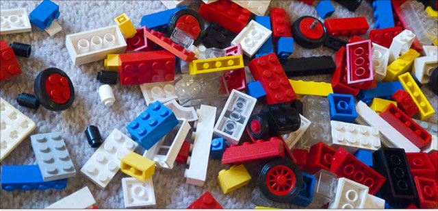
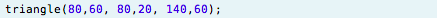
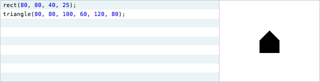
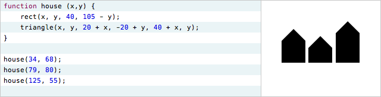
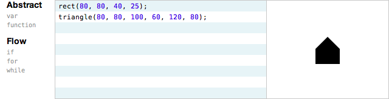

这里有一个棘手的问题：怎样让人们理解编程？
Khan Academy 最近建立了一个学习编程的线上编程环境，它提供了一套基于 JavaScript 和 Processing 语言的教程，它最大的特点是“即时编程”环境，程序的输出会随着程序员的输入更新。
由于这个系统援引了我的工作，我觉得有必要回应一下，关于学习我有两个想法：
因此编程系统的目标应该是：
这两个目标 Processing 即时编程环境一个都没做到。JavaScript 和 Processing 是两种设计拙劣的语言，它们都不能让程序员有效地思考，而且它们忽视了数十年来人类对学习的研究，单把即时编程这种特性拿出来看，也毫无价值可言。
Alan Perlis 曾说过：“要理解程序，你就必须成为机器和程序。”这个观点错了，但正是这个广为流传遗毒不浅的错误导致编程成为一门晦涩难学的艺术。人不是机器，也不应该像机器一样思考。
怎样让人理解编程呢？
我们改变编程方式，让它变成人可以理解的东西。
编程系统有两部分，一部分是安装在计算机上的编程“环境”，另一部分是安装在程序员脑袋里的编程“语言”。
本文提出了一套设计原则，设计用于学习的编程环境和语言。
编程环境应允许学习者：
编程语言应提供：
我们总是用特性来衡量编程环境或编程语言的好坏 -- 这个“有代码折叠”，那个“有类型推断”，而这就好比用辞藻来衡量一本书的好坏 -- 这本有一个“始料未及”，那本有一个“深明厚慈”。单个词没有任何意义可言，有意义的是这些词合在一起传递了什么信息。
同样的，一个设计精良的系统不仅仅是一个装满了特性的袋子。好的系统旨在激发人们以特定的方式思考，它的所有特性都必须围绕着这个目标而设计。
本文将提出很多特性！我所采用的方法是“透过现象看本质” -- 了解这些特性背后的设计原则，以及这些原则如何让程序员思考。
学习者可能碰到一个这样的教学程序：
在读者理解这段代码之前，甚至他还没来得及开始理解代码, 就产生了以下问题：
Khan Academy 的教程鼓励学习者通过“随意调整这些数字并猜测”来发现它们的作用。
通过实验。想象一下，你买了一个新的微波炉，当你从包装盒里取出它，结果看到一大堆没有标签的按钮。
试想一下，如果微波炉鼓励你通过随机按这些按钮来发现它们的功能。
如果你的菜谱建议你通过随机按这些按钮来学习烹饪。
猜测厨房用具的功能不等于学习烹饪，学习烹饪是是理解怎样组合原料。
同样的，猜测 ellipse 函数第三个参数的作用也不是“学习编程”，而是学习时的障碍，在现代编程环境中，记住 API 的细节就像背诵乘法表一样没有意义。
编程环境有义务让词汇意义透明，让读者轻易就能读懂程序，把代码翻译成自己的语言，这样他就能把注意力集中在真正的编程概念上 -- 如何组合算法“原料”。
下面这个例子演示了编程环境如何让词汇意义透明——通过把鼠标移动到词汇上时显示标签的方法：
控制结构同样有标签。
很容易把它联想成某种“行间帮助”，但它并没有提供任何帮助 -- 仅仅是加了标签。下面这个 UI 的问题不是出在没有“帮助功能”，而是出在没有标签。
这个 UI 和下面这行代码提供了相同的信息：
为什么我们能接受代码，但不能接受 UI 呢？为什么我们还指望程序员在“文档”中“查找”函数的用法呢？现代用户界面技术已经十分发达，文档不再非有不可。
编程环境是理解程序的用户接口。尤其对用于学习的编程环境来说，它必须以解释为目的。
所有好的解释都有一个共同点，它们总是与所解释的问题处于同一个上下文中，它们在表达的同时进行了展示。
我们不单单描述词汇的含义，我们还会把它展示在数据的上下文中。下面这个例子中，标签把代码和它的输出结果联系在了起来。
当一行代码做了多件事的时候，这样的联系就特别强大。
上面给出的解决方案仅仅是例子，重要的是它们背后的意图：让学习者能读懂程序。
上面的例子仅仅是达到目的的一种途径，重要的是我们成功地回答了用户的问题。
如果编程环境不能很好地解决学习者的这些问题，那么还没等他们开始学习编程就已经放弃一半了。
Khan Academy 向学习者显示位于左侧的代码，并把代码的输出显示在了右边。当学习者修改代码以后，输出立即更新。
再次展开想象的翅膀，想象有一档无情的烹饪节目，前一秒你看到了一大堆原料，一眨眼，你就看到一个美味的蛋奶酥，然后节目就结束了。
你知道蛋奶酥是怎么做的吗？你能自己做一个了吗？
当然不可能，你必须看到原料是怎么组合的，你需要看到步骤。
Khan 的编程环境和这个假想的烹饪节目一样惨遭缩水，我们看到了左边的代码和右边的结果，但中间的步骤才最重要。计算机沿着代码的路径执行，在循环中循环，跳进函数中，更新变量，然后一点点地输出，这些我们统统都看不到。
人只能理解“看得到”或“碰得到”的东西，为了让学习者理解程序到底做了什么，我们应该让程序流变得可见并且触手可及。
还是这个例子：
这个例子对初学者来说很难理解，for 结构在一行中有三条语句，这让控制流以奇怪的方式跳转，如果我们要介绍循环的概念，使用 for 会增加不必要的麻烦。
为了降低学习的难度，我们可以把循环改写成 while：
现在我们需要让控制流触手可及，我们必须把程序的执行放到程序员的手中，让他觉得这是一件真实的东西，让他掌握它。
在下面这个例子中，程序员通过一个滑动条来控制程序的执行：
现在程序员可以根据自己的节奏在循环中前后移动，理解每一步发生了什么事，他可以前进后退，或在难的地方停留，并比较每个阶段的不同之处，这样用户能知道输出是怎样随时间建立的，而不是倏地一声就看到了它。
上述例子允许程序员随着时间的推移跟踪程序的执行轨迹，但由于窥孔只有一个，每次他只能看到一个点的执行，而没有可视的上下文。
为了说明我的意思，下面有两张图，代表在我家附近的旅行，一个没有显示街道，一个显示了。
“俯视图”可以让人从较高的层次理解这次旅行，只要他能看到旅行的形状，就能看到其中的模式。
在下面的例子中，程序流画在了一根时间轴上，每行执行的代码都留下了一个点，程序员可以一次看到完整的程序流。
这种呈现方式对条件流（或其他控制流）特别管用：
可视化可以让程序员看到算法的“形状”，并从更高的层次上理解算法，程序流不再是“逐行执行”，而是行之间随时间推移呈现出来的模式。
逐行执行是非常细粒度的时间观，时间在程序员眼中可没那么细。
比如动画和游戏以 60 帧/秒的帧率运行，每 1/60 秒，程序就会在屏幕上显示下一帧；有些程序是事件驱动的 -- 它们响应外部事件（比如鼠标点击或网络请求），进行一些计算，然后等待下一个事件。
帧或事件响应形成了一种天然的时间“块”，如果把一行代码比作句子，那么帧就好比章节。我们可以让章节也触手可及，那么程序员就能在章节的粒度上理解程序的执行了。
下面这个例子提供了一条时间轴和一个滑动条，时间轴用来逐行执行，滑动条用来逐帧执行。
这样程序员就能在时间轴上移动，研究某个感兴趣的帧，比较每一帧之间的区别。
在上面的例子中，我们还是在从窥孔中观察程序的执行，每次只看到了一帧。而在下面的例子中，所有帧都以浅色画出，这样当前帧就有了上下文，我们可以一次看到整个球的轨迹。
程序的输出不再是一连串的“瞬间”，而是一样连续的东西，会随着时间的推移延展，这样思考方式蕴藏着极深刻的思想。*
再次强调，这里展示的解决方案仅仅是例子，重要的是这些解决方案背后的目标：让学习者能够跟上程序流，使用的方法是让学习者控制时间和观察模式。程序流原本是一个看不见的的瞬时概念，现在转化为了一个连续的东西，这样我们就能研究它了。
一个简单的程序：
第三行声明了一个叫 scaleFactor 的变量，每次迭代它的值都会变。
花点时间来看这一行，思考以下几个问题：
等等，你不会想心算出这些问题的答案吧？计算机为了画那幅图，所以不得不计算出所有的 scaleFactor。你不会真的想再心算一遍吧？
想象一下，如果 scaleFactor 还依赖于其他变量、函数或外部输入，这些问题可能就无法轻易回答了。*
想想看，我们希望程序员在看不到变量值的情况下来写代码来操纵变量，我们希望读者在看不到变量值的情况下理解操纵变量的代码。代码就是用来操纵数据的，但我们从来都看不到数据。我们带着眼罩写代码，通过意淫阅读代码。
信息设计的倡导者 Edward Tufte 有个首要原则，任何一个用于创造或理解的编程环境也应该以它为准则。
显示数据。
如果你想用心创造一个用来学习的编程环境，要做的第一件事就是显示数据，它比即时编程或可调常量重要，比在线课程或讨论区重要，比徽章、积分、奖励或其他任何东西都来得重要。
因为变量的值会随着时间变化，显示数据的本质就是显示时间。
上一节中提出的时间轴在每一步中都显示了数据。在下面这个例子中，程序员可以把鼠标放在时间轴的某一行上，观察那一行上数据的变化。
在这个例子中，前两个问题很容易就能回答。只要我们把鼠标放在那行代码上，沿着时间轴移动，就能看到 scaleFactor 所有的取值，和这些取值发生的时刻。
但第三个问题还是没办法回答：变量是怎么变化的？变化的形状是什么？这个问题之所以不好回答，是因为我们仍在窥孔中看程序的执行，一次只能看到一个点。
Edward Tufte 还有一个原则，单单显示数据是不够的，还要显示对比。
数据需要上下文，光看一个点的状态还不够，只有通过比较，我们才能理解数据的含义。
到目前为止，时间轴使用点来代表每一行执行的代码，我们可以用数据来代替这些点，下面的时间轴显示了每个 scaleFactor：
每行代码都计算一个值，编程环境应该根据值的类型提供最佳的可视化方案，例如针对 rotate 那行可以显示旋转角度。
fill 那行代码设置了填充颜色，我们可以把颜色显示出来。
triangle 那行代码会在画布上画了一个有颜色、旋转过的三角形，时间轴同样可以显示每个三角形的缩略图。
把它们合在一起，时间轴不仅可以描述程序流，还能够显示所有在程序流中计算的数据。程序的执行完全暴露给了读者，只要看一眼时间轴，他就能看到执行了哪行代码，何时执行，以及执行结果。程序流与数据同时显示在了上下文中。
上面的例子只循环了 20 次，如果循环了几千次，还能那么容易理解吗？
可以 -- 有一个领域就是专门研究怎么描述海量数据的。为了让数据可视化，我们可以使用数据可视化中所有标准技术。
下面这个例子中，当程序员把时间轴缩小，可视化结果会从一张表格自动切换成一张曲线图。
为了理解一行代码做了什么，学习者必须看到它的效果，例如，当程序员把鼠标放在 triangle 那行上，然后横向移动，就可以在画布上看到每个三角形：
但 fill 设置的是下一步操作的填充颜色，当程序员把鼠标放在这一行上，能看到什么效果呢？什么也看不到，因为 fill 函数修改的是隐藏状态。
Processing 图像库使用了大量的隐藏状态，例如“当前的”填充颜色、画笔颜色、变换矩阵等等。修改这些状态时并不能对画布产生可见效果，对于一个交互式的编程环境来说，这是不可接受的。
我们有两种设计上的选择，第一种是消除状态，例如，以参数的形式把颜色传给 triangle 函数。
另一种是显示状态，下面的例子中，当前填充颜色和画笔颜色同时显示在了画布上方。现在，当一行代码修改了填充颜色时，程序员就能够看到变化。这一切都是通过可视化的方法来实现。
要么消除所有状态，要么显示所有状态，两种都是合理的设计策略。如果编程环境一个都没有做到，那么就是不负责任的设计，对于学习者也够不尊重，因为它迫使学习者“意淫”程序的状态，因为函数的效果不可见，所以也只能猜测它们的含义。
当前变换矩阵是一种很重要的状态，它很容易令人迷惑。如果你想用 Processing 图像库画一个有趣的东西，就要用到变换矩阵，但是“当前变换矩阵”是不可见的，我们看不到 scale 和 rotate 函数的效果，混合变换（先平移后缩放，或先缩放后平移）通常要让程序员花很长时间调试。
在下面这个例子中，变换得到了可视化，你可以直接看到每个函数产生的效果。
代码操纵数据，为了理解代码，学习者必须看到数据，并看到代码对数据产生的效果。
最近我观察一个艺术家朋友作画，我问他准备画什么？他说还没想好。他“画到哪是哪”，根据画布上的东西作出反应，产生灵感。异曲同工的是，绝大多数音乐家不等旋律在大脑中成形就把它们写了下来，他们拨弄一阵子乐器，弹奏一些模式出来，然后根据他们听到的旋律作出反应，调节音调，反复琢磨。
画家的画布和音乐家的乐器有一个共同点——即时性，艺术家能够很快地从它们那里得到反馈，然后作出反应。画布和草稿本是“思维的延伸”，有了它们艺术家就可以持续地对眼前的事物作出反应，逐渐形成想法。
相反，程序员总是在脑袋中进行工作，先想象程序的每一个细节，然后吭哧吭哧写成代码。
在脑袋中工作不能扩展，脑袋这个硬件已经好几百万年没有升级过了，为了给程序员插上创造的翅膀，编程环境必须提供一种延伸思维的方法，让程序员可以根据当前的进展做出反应，从而离开脑袋进行思考。
某些编程系统试图用所谓的“即时编程”环境来做到这点，即当修改代码时马上更新输出，比如下面这个例子：*
正像你看到的那样，即时编程本身没有任何价值，程序员还是需要打完一整行代码才能看到效果，也就是说程序员还是需要在大脑中完成创造性工作 -- 想象下一步要在程序中添加什么功能，然后把它们翻译成代码。
当然即时编程为其他特性供了基础，比如“随机应变”。在下面这个例子中，编程环境会用默认参数自动补齐代码，只要输入几个字符，程序员就能马上在屏幕上看到东西，然后就可以开始调整它们。
大部分编程环境都有自动补齐的功能，但是这里有两点玄机。首先，所有函数都有默认参数（位置、宽度、高度等等），因此每次补齐会产生可见效果。第二，补齐时会选中一个默认选项，这会影响程序员的思考：
在上面这个例子中，程序员想要在房子上画一个屋顶，他无需事先想好该画什么样的屋顶 -- 他不需要想好该用哪个函数，而只要有一个模糊的想法：“我想画一个东西。”于是他输入 draw，立刻在屏幕上看到了一个形状。
这时，他就不再幻想，开始作出反应：
上面这个例子假设了一种图像库，图像库中的所有绘图函数都以 draw 开头，这样设计是为了支持自动补齐，当用户输入 draw 后补齐列表出现的都是与绘画相关的函数。*
另一种构建库的方式是提供一个 shape 函数，它接收形状的类型（三角形、椭圆等等）作为参数，例如：
这进一步促进了“随机应变”的思考方式，因为 drawTriangle 和 drawRect 不在词汇表中，在屏幕上出现任何东西前，程序员用不着去想绘制特定形状的函数，他希望就从“形状”开始。
编程环境是用户写程序时的用户界面（user interface）。考虑上面出现的第二个菜单，里面有 line、triangle 等等，如果一个参数接收这五个值中的一个，那么编程环境就应该提供最好的界面来选择这五个值。对程序员来讲，什么样的 UI 最能够代表这五个选项呢？至少是这样：
为什么我们不能再大胆一点呢？
你小时候一定玩过建造游戏 -- 比如乐高、建筑拼装游戏或积木。小孩在搭之前通常会把所有零件都倒在地上。

这样他就能很快地取到积木，而且这样所有的零件都一览无遗，很容易产生新想法。原本他可能在造一辆汽车，但当他看到了一个扁平的零件以后就决定给汽车添一对翅膀。
这是第二种随机应变的方式，除了对要建造的东西作出反应，小孩还能对所有零件作出反应。
在下面这个例子中，所有能使用的函数都放在了代码区的旁边，程序员可以根据浏览到的“零件”产生想法。
上面这个例子可以鼓励程序员探索所有的函数。学习者原本想不到 bezier 函数，它不仅名字陌生，而且接收 8 个参数，但现在他完全可能在无意中点到它，然后发现它的作用。
这个例子只是“零件桶”的一种表现形式。对用户界面设计者而言，如果要在计算机屏幕上绘图，最好的界面是什么样的呢？看下面。
可能有人会反对，这是“编程”吗？
不是，这一节中所有的例子都不是“编程”。输入以下代码绘制一个静态图形 --

-- 也不是编程！它仅仅是一种笨拙的解释方式。只有当代码开始抽象时，才是真正的编程 -- 当参数是变量时，当相同的代码能做不同的事情时，才是编程。下一节会讨论“随机应变”如何使抽象变为可能。
随机应变的思维方式其实就是：随意开始，然后不断调整，直到你觉得它正确为止。*
程序员必须能够在编程环境中进行思考，而不是局限于自己的脑海中。编程环境应该是思维的延伸，程序员应该能根据工作进展持续地作出反应。
必须澄清，这样做并不是让程序员不思考！而是让想法立即呈现。我在文本编辑器中写作此文，我喜欢这种写作方式，我想到什么就能立即显现出来，而且可以马上编辑它们。但是在遥远的过去，我就得和剧作家和演说家一样，把语言禁锢在脑中很长时间才能动笔写下来。
学习编程就是学习抽象。
计算机程序不过是一串固定的指令流 -- 在这里画一个矩形，然后在那里画一个三角形 -- 易写，易读，易理解。

但这完全没有意义，用手画这个房子更简单。那么“编程”的意义何在，仅仅是为了让计算机做一些简单到我们都可以完成的事情吗？
编程的意义在于概括某段代码，我们可以修改程序，让它在任何我们想要的地方画房子，我们可以让程序画很多很多房子，画不同高度的房子，重要的是通过一句说明我们就可以画不同的房子。

它还是在说“在这里画一个矩形，然后在那里画一个三角形”，但是我们把“这里”和“那里”抽象了出来，不同的变量指定了不同的“这里”和“那里”。
程序员怎么学写抽象代码呢？又怎么学写能够概括特例的说明呢？
学不了。学习者应该从写具体的代码开始，然后逐渐修改它，从而引入抽象。而编程环境必须提供进行这个过程的工具，这样学习者才能够理解程序的每个阶段。
在抽象这种思维方式中，程序员从创建特例开始，特例通常包含常量，然后他把常量改成变量，从而把特例变成一般情况。下面这个例子显示了编程环境如何激励程序员进行这种思考，还是房子的例子。

程序员想把房子移动到不同的位置，调节其中某个数字并不能移动房子，因为一次需要改动四个点 -- 矩形一个，三角形三个。
程序员选择了一个数字，并把它转化为了变量。
然后把变量拖到另一个数字上，把它们连接起来。
triangle 还有两个参数也需要变化，当程序员把其中一个连接到变量时，变量值是 80，常量值是 100，编程环境提供了两个数字之间四种可能的关系。
四个表达式分别是加减乘除，其中有一个是正确的关系。
下面是引入变量的完整过程。
我们在上面的例子中抽象出了房子 -- 代码不再只能画出位置固定的房子，而是可以在任何地方画。抽象以后的代码可以用来画很多不同的房子。
下面的例子中，程序员想要画一排房子，它选择了抽象后的代码，然后把它转化为了循环。
第一行中的变量变成了归纳变量，程序员可以调整它的边界。
下面是从特例开始，然后逐步概括的过程：
在每个阶段，程序员都可以用鼠标拖动相关参数，而参数站在了更高的抽象层次上。于是程序员仍旧可以随机应变，只是这次他站在了更高的层次上随机应变。
---
如果程序员不想画等间距的房子，而是想单独控制每个房子的位置，他就可以在抽象变量的基础上把代码变成函数。
通过复制函数调用，程序员可以单独控制每个房子。
如果他不想创建相同大小的房子，而是想改变房子的高度，可以引入另一个变量，把它转换为成函数的另一个参数。
这个过程仍旧从具体开始，然后逐步引入抽象：*
从具体和实际的东西开始，从一个容易理解的特例出发，然后逐步、逐层概括，这样程序员就能理解每一级的抽象了。
具体的代码可以细致地处理 -- 程序员可以显式控制每一步的执行，而抽象则意味着放弃控制权，学习者害怕失去控制。
但学习者可以循序渐进 -- 引入变量，拖动它，然后把变量连接到其他值，拖动它，把变量转化为函数参数，拖动它。学习者通过控制底层细节来获取经验，从而理解它们，并信任它们，然后才能放手用抽象去控制它们，进入更高层次进行控制。
编程环境必须支持这个过程，典型的文本编辑器只支持“向下”编程 -- 新增一行代码。编程环境还应该支持“向上”编程 -- 抽象现有代码。*
编程系统有两部分，一部分是安装在计算机上的编程环境，另一部分是安装在程序员脑袋里的编程语言。
编程环境的设计会影响程序员的思维方式，编程语言的设计也是如此。两者最好一起设计，视为一体。现在有很多编程环境使用 JavaScript 和 Processing 这两种语言，为了作比较，本文的例子也用了它们，但对于一种用于学习的编程语言来讲，它们并不是好的设计。
好在，我们可以站在巨人的肩膀上 -- 那些精心设计、而且设计得很漂亮的编程系统，它们充分考虑到了人类思考和学习的方式。这一节将简要地介绍一些设计原则，它们是从过去那些伟大的系统中提炼出来。
Seymour Papert 的这本 Mindstorms 是设计一个用于学习的编程系统最权威的著作，可能也是这个时代最伟大的关于学习的作品。
在不理解这本书所讲的原则的情况下设计学习系统，就好比在不理解什么是“杠杆”或“重力”的情况下设计机械系统。如果你在阅读这篇文章（我知道你在！），就需要阅读这本书。
我是认真的，如果你想设计任何有关学习的东西，就必须阅读 Mindstorms。
还犹豫啥，阅读 Mindstorms。
---
本节会引用四种有极富创造力的编程系统，它们的设计目的都是用来学习，所以我强烈推荐你学一下它们。
学习古老的软件很有难度，那些能将系统的“灵魂”道清的资料已经找不到了，以下我是我能提供的最好材料：
Logo: 还好我们有 Seymour Papert 的 Mindstorms 和 The Children's Machine。
Smalltalk: 我推荐 Alan Kay 的 Early History of Smalltalk 和 Dan Ingalls 的 Design Principles Behind Smalltalk。
HyperCard: 请参阅 Bill Atkinson 的演讲。
需要澄清的是，我并不提倡使用以上这些系统，原型或后代都不提倡。我提倡的是理解它们，并在他们的深刻见解的基础上进行创造。
在 Logo 中，程序员通过指挥“乌龟”来画画，“乌龟”是屏幕上的一个字符，它在移动时会留下踪迹：
看两分钟视频 -- 有一群孩子，还有大胡子的讲话：
这是 Seymour Papert 在解释 Logo 乌龟。乌龟提供了一些功能强大的函数，但重要的是程序员可以通过它获得身份。为了弄情怎么让乌龟做动作，程序员可以先问“这个动作我自己怎么做呢？”，仿佛自己就是那只乌龟。
例如，如果要明白怎么画一个圆，学习者需要自己走一个圆出来，然后得出“画圆”其就是往前一步，旋转一个角度，再往前一步，再旋转一个角度的过程。教会自己以后，学习者就能教计算机了。* * 这里，学习者已经导出了圆的微分方程，并实现了它，尽管他不知道微分方程是什么。Papert 认为 Logo 程序是“对微分方程直观的模拟”。乌龟是程序员“自己”在计算机中的化身，就像电子游戏中由玩家扮演的角色一样，于是学习者就能把自身的知识迁移到编程中。
每一种编程语言都是由隐喻组成的，但是有的隐喻比其他隐喻更能接近思维。标准的命令式编程使用了“赋值变量”的隐喻。与 Logo 乌龟不同，这种隐喻并不是用来给人学习或理解的，而是一种在底层系统结构上使用的隐喻，比如“保存到存储器”。* * Alan Kay 在 The Early History of Smalltalk 中说：“即使是最抽象的赋值语句也很低层……程序员不是图灵机，编程系统中要求程序员使用的图灵机技术越少越好。”
Smalltalk 和 Logo 一样具有形象的隐喻，它使用了 message。Smalltalk 中的所有计算可以表示为在对象之间发送、回应消息。为了给对象的行为编程，程序员必须把自己当成是对象（甚至把那个对象就称为“自己（self）”！），想象自己在和另一个对象对话。这是一种强大的隐喻，因为角色扮演与对话是人类与生俱来的能力。和 Logo 一样，Smalltalk 的隐喻经过了时间的考验。
在 HyperCard 中，程序以卡片栈表示，程序员在每张卡片上画出对象。在传统的编程语言中，“对象”是计算机中虚无缥缈的实体，而在 HyperCard 的每个对象都有“物理形态” -- 它出现在卡片上的某个位置，你可以看到它，可以拖动它，HyperCard 中的每个对象都是一样“真东西”，这是一种强大的隐喻，程序员可以使用直觉，并通过它理解物理世界。
Rocky's Boot 做成了游戏的形式，玩家可以扮演游戏中的角色走来走去，玩家不但可以把捡起某个物体并移动它，而且可以扮演能源 -- 电不再是某种抽象的电压读数，你可以看到橘黄色的火焰流过电线，十分漂亮隐喻，让“跟上程序流”和“看到状态”变得轻而易举。
而在 Processing 中，程序员没有任何身份，没有什么有效的隐喻可以让程序员把个体经验迁移到程序上，程序员不能通过在现世界中重演来解决程序问题。
Processing 的核心隐喻是“画家算法” -- 计算机把一系列的形状显示在屏幕上，犹如在纸上画画。因为这种隐喻不具有计算能力（你不能靠填充像素点来计算），所有的计算都发生在隐喻之外，下面是一段弹力球的动画 --
球的属性（位置、速度）和图上的球没有丝毫关系，它们抽象为“数字”保存在了“变量中”，然后进行计算，Processing 虚无缥缈的内部表示把球和属性割裂开来，球仅仅是一个影子，你不能把它捡起来，也不能移动它，你也不知道它怎么和其他物体交互，它不是一个“真实存在的东西”，程序员只能思考“变量中的数字”来理解模拟的过程，这是一种羸弱的思考方式。* * 而在一些系统中，屏幕上的物体是真实存在的，比如 Etoys 或 Morphic.
模块化是大脑对抗复杂性的法宝。把一个复杂的东西分解成可以理解的组块是理解的关键，也是理解的本质。
编程语言必须鼓励程序员分解 -- 为了解决一个复杂的问题，把它分解成很多简单的问题。Papert 将其称为把程序分解成“能够理解的最小碎片”（mind-size bites）。
Logo 使用了“教乌龟认识世界”的隐喻，为了画一张有四个圆形组成的脸，我们可以教乌龟画圆的子过程，然后调用四次。学习者需要花很长时间思考才会发现他需要用子过程，然后把大的过程分解为一个个子过程。
Smalltalk 外表上是一种编程语言，但本质上它是一种分解的哲学，以下 Alan Kay 发明对象的原因：
Bob Barton 说：“递归的基本原则就是让部分和整体一样强大。”我第一次看到“整体”两个字的时候就想到了计算机这个整体，我奇怪的是为什么每个人都希望要把计算机分解成更弱的东西——数据结构和过程，为什么不把它分解成一台台小的计算机……无数个小计算机，每个都模拟一种有用的结构？
Smalltalk 的核心观点是一个复杂的计算机程序可以分解成很多更小的计算机，称为“对象”。在 Smalltalk 中编程就相当于在做分解练习 -- 把想法分解成类和消息。
几乎所有计算机语言都提供分解的工具，但有的语言做得更好。John Hughes 在 Why Functional Programming Matters 中提到在 Haskell 那样的语言中，分解占据了核心地位：
当我们写模块程序来解决问题时，首先我们把问题分解为子问题，然后解决子问题，最后把所有的解合并起来。而怎么分解原问题取决于怎么把解粘合起来，要想提高程序员模块化问题的能力，就必须在编程语言中提供新型胶水。
函数式语言提供了两种新的，同时也是很重要的胶水……这是函数式编程强大的关键 -- 允许改进模块。
你可以在 Processing 中通过函数定义像 Logo 那样把程序分解成子过程。但 Processing 不支持 Smalltalk 那种更强大的分解方式，即子模块之间可以独立地思考的方式。Processing 把绘图和输入事件绑定到了单一入口点 -- 比如 draw 和 mouseDown 那样的高层函数，子模块的行为必须通过全局函数来调用，因此不可能把程序分解成两个完全独立的模块。
若程序员写了一个弹力球的动画，怎么把它改成两个球，三个球……一百个球呢？怎么让这些球相继落地？怎么用鼠标拖动这些球？在一个真正用来学习的编程环境中，比如 Etoys，这完全可以做到，而且它鼓励学习者这么做。但是在 Processing 中，每一个改进都复杂无比。
阻挠程序员进行分解的编程语言会削弱他们的思维能力，而思维是恰恰最有价值的东西。
创造就是重新混合。新想法很大程度上是老想法的新组合。
编程语言必须鼓励重组 -- 把其他程序的一部分抓过来，重新编排在一起，进行修改，在它们的基础上构建。这样创造者一开始就有了可以做出反应的东西，而不是面对一张白纸。同时创造者可以互相学习，而不是在真空中学习技术和方法。
HyperCard 就是为重组而设计的，在这方面可能还没有哪种语言可以超过它。Bill Atkinson 希望创造者可以通过复制其他程序对象的方式来“写”程序，然后逐步微调和自定义，因此每个程序都是其他程序的零件。因为所有源代码都以脚本的形式嵌入到了独立的对象中，加上脚本在引用其他对象时采取了松耦合，因此可移植性要比其他系统好得多。* * HyperCard 被视为“web 本来该有的样子”。今天的创造者不能从其他网站复制图形对象来创建网站，未来恐怕也不能。可悲的是这并不是“技术方面的限制”导致的 -- 而是由一连串有欠考虑的系统设计所造成的。
很多人很尊崇 HyperCard ，因为是它把他们带进编程的大门。如果用户可以通过复制粘贴重新混合他们的程序，不知不觉就从用户变成了创造者，最后很有可能变成程序员。
因为 Processing 不能模块化，也就不能重组，程序员不能把朋友的弹力球借来放在自己的球边上 -- 他们必须重命名变量或手工封装；draw 和鼠标函数捆绑在了一起，等等等等。程序员可以从一个现有的 Processing 程序上手，然后修改它，但是语言并不鼓励程序员组合两个程序。
更糟糕的是，Processing 依赖于全局状态，这有碍于哪怕最简单的重组。打个比方，想象你在写邮件，你从网站上复制了一行红色的字粘贴到你的邮件中，邮件中其他部分也变为了红色：
当我们复制粘贴 Proccessing 代码时也会发生这种情况，因为 Processing 处理颜色的方式天生有漏洞：
老手看到这个例子可能会认为是程序员的错，因为“代码就是这样”，但是这不是编程的错，而是由一系列设计决策所造成的 -- 可变状态，全局变量，没有封装性。
还有更糟的，Processing 有一个全局模式，修改后函数参数的含义也会改变，下面这行代码设置了填充颜色，你知道它是什么颜色吗？
很难回答 -- 不可能知道是什么颜色，因为 255 的含义取决于全局量 color mode，他可能是以下颜色：
如果两个 Processing 程序指定了不同的颜色模式，那么把它们组合在一起会酿成惨剧。
设计一个支持重组的系统需要反复推敲，方便于个体的设计决策对整个社会的创造力来说可能是灾难。
学习者看到一行代码就应该能知道它的含义。
语法很重要。下面有两句 HyperCard 脚本语言，以及它们在传统语法中的等价形式：
HyperTalk 碰巧使用了一种类似英语的语法，但这不是关键。重要的是学习者可以根据上下文理解每个参数的含义。很明显，"hello" 是字符串，"greeting" 是文件名，"0, 0" 是起点，"100,100" 是终点，而在传统的语法中，它们的含义很模糊。
再举一个例子，下面是程序员绘制椭圆的代码，用了三种语言：
在 Smalltalk 中，参数有上下文，而 Processing 的 ellipse 和汇编语言一样神秘。读者必须查找或记住这些参数的含义，这会干扰阅读。
名字很重要。下面有四个 Apple Coaoa 框架中的数组方法，以及它们在 JavaScript 中的等价形式：
Cocoa 严格地遵循了语法规则，因此能够迅速传达方法的含义，动词短语 addObject 执行动作但没有返回值；名词短语 arrayByAddingObject 会返回名字中的名词，而且通常情况下没有副作用，除非方法的名字有所暗示。而方法接收的参数也通过名字来强调，就像 Smalltalk 那样（addObject 接收一个对象，addObjectsFromArray 接收一个数组。）因此，即使在没有文档的情况下，Cocoa 代码也很好读，至少能有个大概了解。
相反，Processing 函数名在语法上含糊不清，而且起误导作用，很多名词会执行动作，比如 ellipse 和 triangle；很多动词则不会，例如 fill 和 stroke。* 程序员用名词 color 来构造颜色，用动词 createImage 来创建 image，在语言上如此马马虎虎是不恰当的，尤其对一个用于学习的系统而言，更是如此。编程语言应该能够被人理解，而不只是编译器。
本文中提到的设计原则可以用来衡量一个以学习为目标的编程系统的好坏。
编程环境是否允许……
编程语言是否提供……
本文提到了很多特性、引用了很多系统专门来回答这些问题，但问题本身比回答更重要。
一些人可能会指出他们激发了创造力，藉此来捍卫自己设计糟糕的系统，比如如果新人在 Khan Academy 和 Processing 系统中创建了很多程序，难道不能说明这个系统很有价值吗？
未必，人的创造力是与生俱来的，即使在最不友好的编程环境中有些人还是能够创造，这并不能为差的系统正名。对于这种思路，Ian Bogost 有一个令人印象深刻的回复。
如果你正在设计一个编程系统，而你又不能回答这些问题，那么就请重新翻开你的草稿本，因为你离完成设计还很远。
虽然这些设计原则针对用于学习的编程系统而提出，但它们适用于所有编程系统。老手可能不需要知道 if 语句代表什么含义，但他需要理解程序运行时的行为，而且他需要一边编程一边理解。
关于本文中提到的技术一个常见的问题是：“这个技术怎样扩展到真实的编程中？”这个问题没什么不对，只是有点像在问“内燃机对马有什么好处？”，问题的对象搞错了。
更有用的态度是：编程本该如此。程序员必须能读懂词汇，跟上程序流，看到状态；必须能够随机应变和抽象。在这些需求下，我们应该如何重新设计编程？
举个例子，在今天各式各样的编程环境中，程序启动时会创建一大批有状态的对象，它们相互作用，如果我们修改了代码，为了看到效果，程序必须“重新启动”。 -- 整个世界毁灭了，然后从头来过。既然修改前后程序的状态没有连续性，我们怎么能“随机应变”呢？又怎么才能在修改代码以后马上看到它们对程序流和数据起的作用呢？
答案是我们不能，这个问题错了，更好的问法是：“我们怎么设计一种新的编程模型，它能够持续地进行修改？”我们已经有了明确的信号。*
再举一个例子，今天的大部分程序操纵的是抽象数据结构和不透明的对象，而不是图片，我们如何可视化这些程序的状态？
这个问题又错了，一种更好的态度是主张我们必须理解程序的状态，那么我们就可以问：如何设计可视化的数据结构？我们为什么不能发明专门用来可视化的数据结构呢？我们如何迈向一个新的文明？在那里只有可视化的数据才是合理的，不透明数据就像今天我们眼中的 goto 一样不可思议。* * 提前引用：我在自组织（ad-hoc）数据结构的上一些自动可视化工作会在今年发表，合作方是 Viewpoint Research。
在著名的《没有银弹》中，Fred Brooks 证明了软件是天生“不可见和不能可视化的”，并指出了所谓“可视化编程”环境的全军覆没。Fred Brooks 没说错 -- 可视化编程根本一文不值，不过是因为它可视化了错误的东西。
传统的可视化环境可视化了代码和静态结构，但是我们不需要理解它们，我们需要理解代码在做什么。
也许我们不需要什么银弹，我们只需要摘下眼罩，看一看我们在往哪里射击。
感谢 Star Simpson, Dan Amelang, Dave Cerf, Patrick Collison, Christina Cacioppo, and Oliver Steele 对这篇文章的反馈。
之所以写这篇文章是因为听到了太多关于 Inventing on Principle 就是“即时编程”的说法，看到了太多想要用一个挂满徽章和吉祥物的 JavaScript 编辑器“教别人编程”的网站。纯属本能反应。
快去读 Mindstorms，好吗？